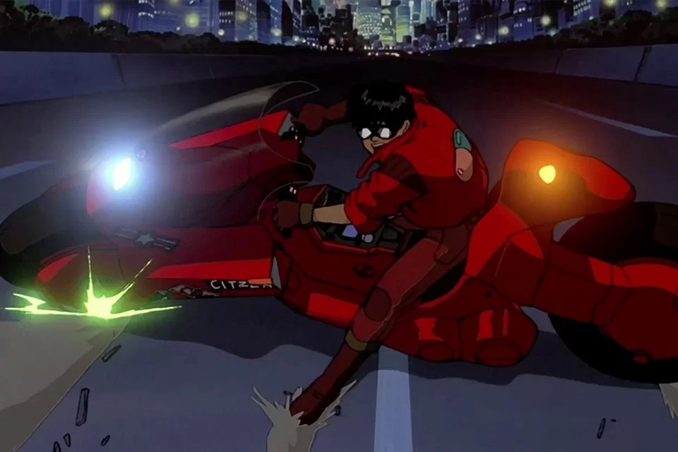
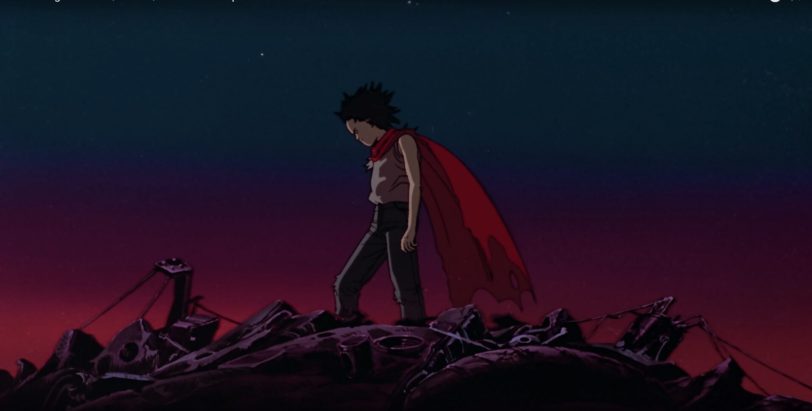
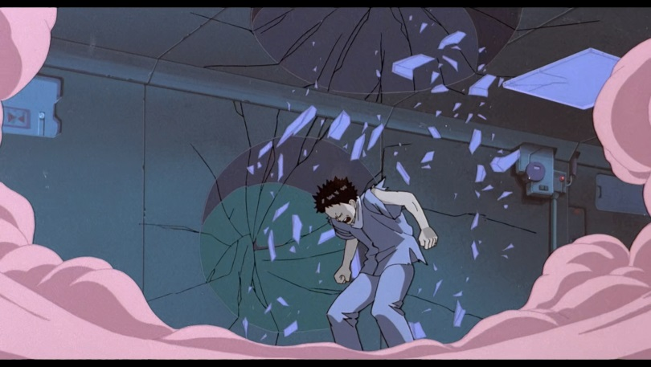
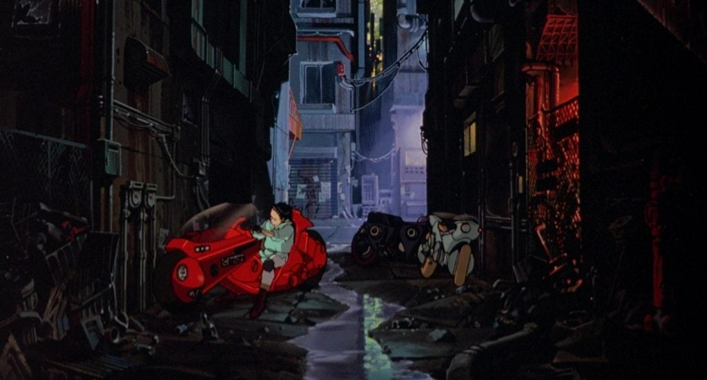
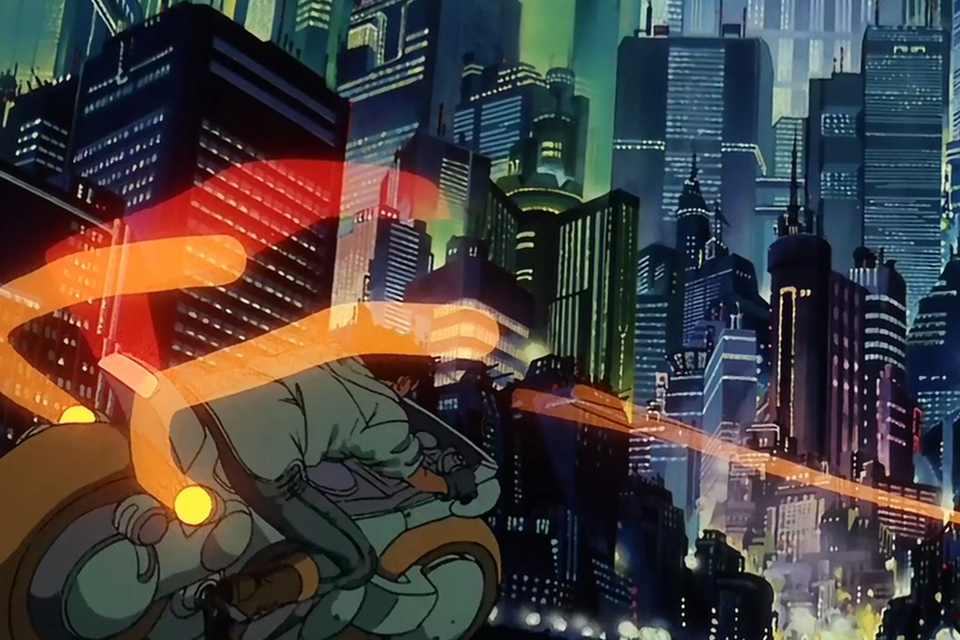

Sinopse
Uma grande explosão fez com que Tóquio fosse destruída em 1988. Em seu lugar foi construída Neo Tóquio, que, em 2019, sofre com atentados terroristas por toda a cidade. Kaneda (Mitsuo Iwata) e Tetsuo (Nozomu Sasaki) são amigos que integram uma gangue de motoqueiros. Eles disputam rachas violentos com uma gangue rival, os Palhaços, até que um dia Tetsuo encontra Takashi (Tatsuhiko Nakamura), uma estranha criança com poderes que fugiu do hospital onde era mantido como cobaia. Tetsuo é ferido no encontro e antes de receber a ajuda dos amigos é levado por integrantes do exército, liderados pelo coronel Shikishima (Tarô Ishida). A partir de então Tetsuo passa a desenvolver poderes inimagináveis, o que faz com que seja comparado ao lendário Akira, responsável pela explosão de 1988. Paralelamente, Kaneda se interessa por Kei (Mami Koyama), uma garota envolvida com espiões que tenta decifrar o enigma por trás das cobaias controladas pelo exército.
Cenas do filme
    Por que Akira é tão importante para a cultura pop?
Akira, de 1988, é um dos maiores e mais influentes animes da cultura pop. Baseado no mangá de mesmo nome, escrito por Katsuhiro Otomo, tem a história ambientada em Neo-Tóquio, cidade reerguida após a destruição da metrópole japonesa em virtude da 3ª Guerra Mundial.
Nesse contexto, a trama acompanha uma gangue de motoqueiros, especificamente os personagens Kaneda e Tetsuo, figuras rebeldes e com desconfiança dos rumos da política local e do mundo.
Um estilo revolucionário
Conhecido por sua animação meticulosa e revolucionária, cada quadro do filme foi composto com uma maior atenção aos detalhes e às cores. Tal ocorrência proporcionou uma riqueza de difícil comparação, em especial devido ao uso de cores saturadas e misturadas com tecnologia.
Nesse sentido, um de seus maiores destaques, além da narrativa, é o uso da iluminação ao trazer a aplicação de neon tanto para definir o aspecto visual — com seu brilho colorido — quanto para provocar uma sensação retrowave. Tal estética ainda representa um significado especial para o gênero cyberpunk, com um lado distópico e futurista.
Do Japão para o mundo, e vice-versa
Uma das maiores contribuições da produção foi a de apresentar ao mundo todo uma cultura até então estranha para o ocidente. De acordo com os caminhos recentes da indústria cinematográfica, nos quais vemos constantes adaptações de obras clássicas estrangeiras para o público norte-americano, em 1987 Stephen Spielberg e George Lucas se recusaram a trazer Akira aos EUA, com a justificativa de que não seria adequado à audiência ocidental.
Entretanto, tal afirmação foi vista como contraditória, pois o escritor e diretor Katsuhiro Otomo utilizou em seus trabalhos muitos conceitos consagrados do cinema clássico e contemporâneo do ocidente. No caso de Akira, vários aspectos temáticos do filme foram baseados em longas como Juventude Transviada, Videodrome: A Síndrome do Vídeo, Blade Runner: O Caçador de Androides e 2001: Uma Odisséia no Espaço. Além dessas, é possível citar inspiração em produções famosas daqueles diretores, como E.T.: O Extraterrestre e Star Wars, respectivamente.
Entretanto, tal afirmação foi vista como contraditória, pois o escritor e diretor Katsuhiro Otomo utilizou em seus trabalhos muitos conceitos consagrados do cinema clássico e contemporâneo do ocidente. No caso de Akira, vários aspectos temáticos do filme foram baseados em longas como Juventude Transviada, Videodrome: A Síndrome do Vídeo, Blade Runner: O Caçador de Androides e 2001: Uma Odisséia no Espaço. Além dessas, é possível citar inspiração em produções famosas daqueles diretores, como E.T.: O Extraterrestre e Star Wars, respectivamente.
Influências na cultura pop
No cinema e na televisão, a atração moldou e inovou a ficção científica moderna. Na primeira, é notória sua influência, como em Stranger Things. A popular série da Netflix é, em sua essência, uma carta de amor para os clássicos oitentistas e, no caso da trama, trouxe a personagem Eleven, uma criança modificada por um grupo misterioso para desenvolver poderes telecinéticos e ser usada como arma, referência clara à Akira.
Já no caso de filmes que se inspiraram na obra japonesa, é possível destacar Looper: Assassinos do Futuro. O thriller de ficção científica de 2012 tem uma premissa diferente de Akira, mas a influência é notória. O filme segue um grupo de viajantes no tempo que derrubam alvos da máfia em diferentes épocas. O diretor Rian Johnson já admitiu usar o anime como inspiração para um personagem, chamado Cid. Ele é um garoto que perde o controle sobre seus poderes psíquicos espetaculares, assim como Tetsuo no final de Akira.
Outro caso é Poder Sem Limites, ao abordar a história de três meninos que ganham poderes telecinéticos após o contato com um objeto misterioso. Enquanto dois dos garotos preferem usá-los em brincadeiras, o outro os leva para um lugar mais sombrio, fazendo com que ele perca o controle e parta para um caminho assassino, similar ao colapso de Tetsuo no final do anime.
Mas nem todas as inspirações vêm de grandes produções. Wes Anderson, diretor conhecido por seu trabalho autoral em filmes independentes, buscou grandes obras japonesas para basear parte da narrativa, seja a estética ou, de modo mais genérico, filosófica. Dentre essas referências, encontra-se Porco Rosso: O Último Herói Romântico (de Hayao Miyazaki) e O Anjo Embriagado (Akira Kurosawa), além, é claro, de Akira.
A cena que se conecta mais claramente com o anime encontra-se em Ilha dos Cachorros, na qual aparecem cinco cachorros andando de motocicletas sobre uma ponte. Inclusive, Anderson ainda trouxe Otomo para criar um dos pôsteres de seu filme. Na ocasião, o diretor japonês disse: “está cheio de homenagens ao cinema oriental”.
Enquanto um anime diferente influenciou principalmente Matrix — no caso, Ghost in the Shell —, a trilogia das irmãs Wachowski também se relaciona muito com Akira. Ambos os filmes retratam cidades destruídas pela guerra e pessoas lutando contra as consequências. Além disso, o primeiro filme da trilogia também apresentou uma criança com poderes telecinéticos ao orientar Neo a dobrar uma colher.
Por fim, vale apontar sua influência na música. Exemplo disso é que Kanye West nunca escondeu seu amor por animes em geral e por esse anime especificamente. No caso, o vídeo da canção “Stronger” é uma homenagem, que inclusive trouxe uma versão live-action de algumas das cenas de Akira, incluindo sequências de motocicletas, origem dos poderes de Tetsuo e muitas outras.
Outro caso em que Akira foi referenciado na música foi no clipe “Scream”, de Michael e Janet Jackson. No vídeo, uma cena do filme aparece ao fundo no final, ao mostrar Tetsuo em queda de um laboratório militar.
Como é possível notar, Akira teve grande relevância para a cultura pop como um todo, após décadas e diferentes gerações. Seu impacto causou não apenas em produções audiovisuais, mas também em peças de vestuário e produtos.
Contudo, uma adaptação live-action em Hollywood ainda parece distante, visto que recentemente foi adiada indefinidamente pelo estúdio Warner Bros.